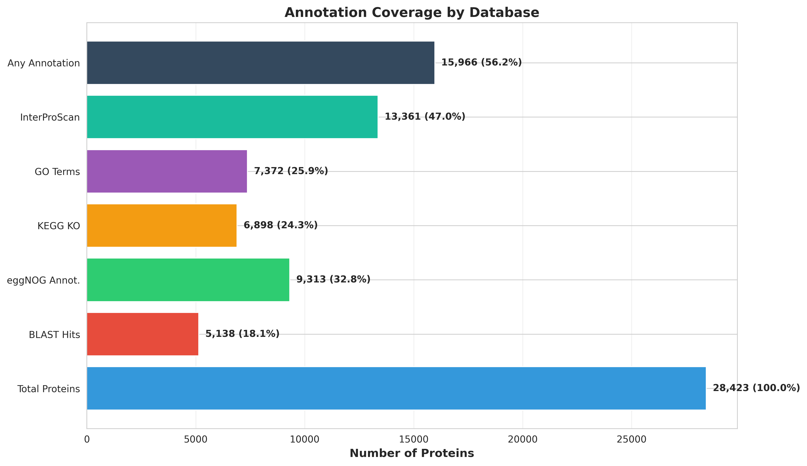
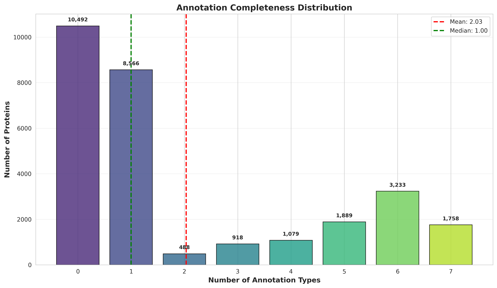
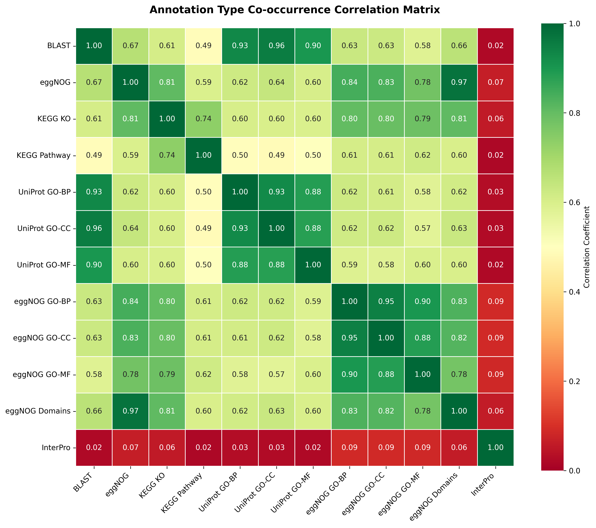
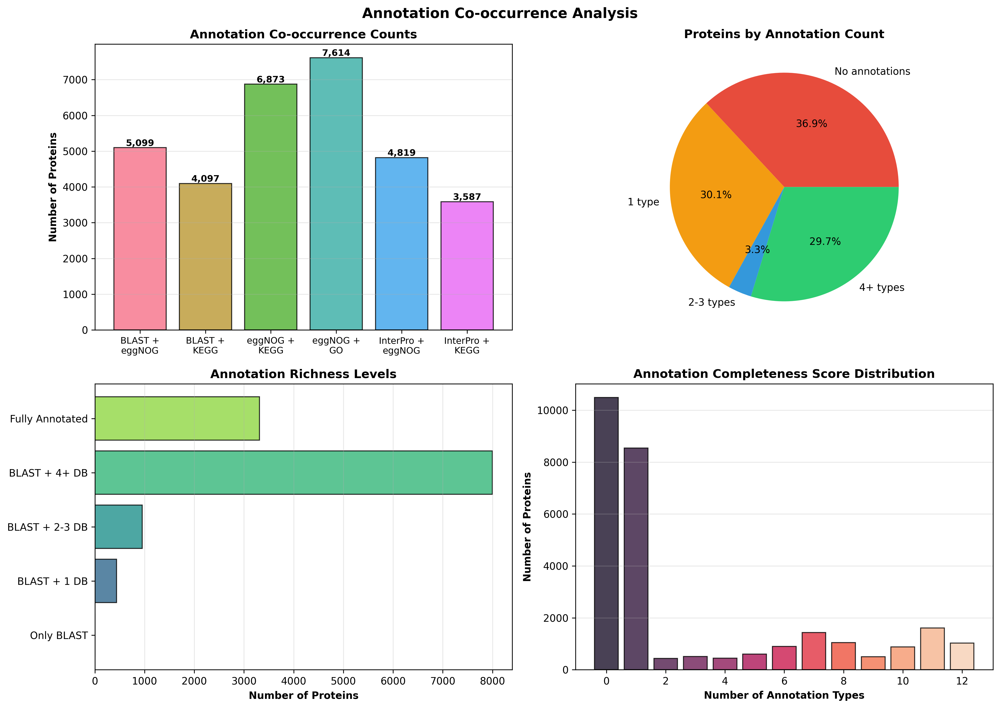
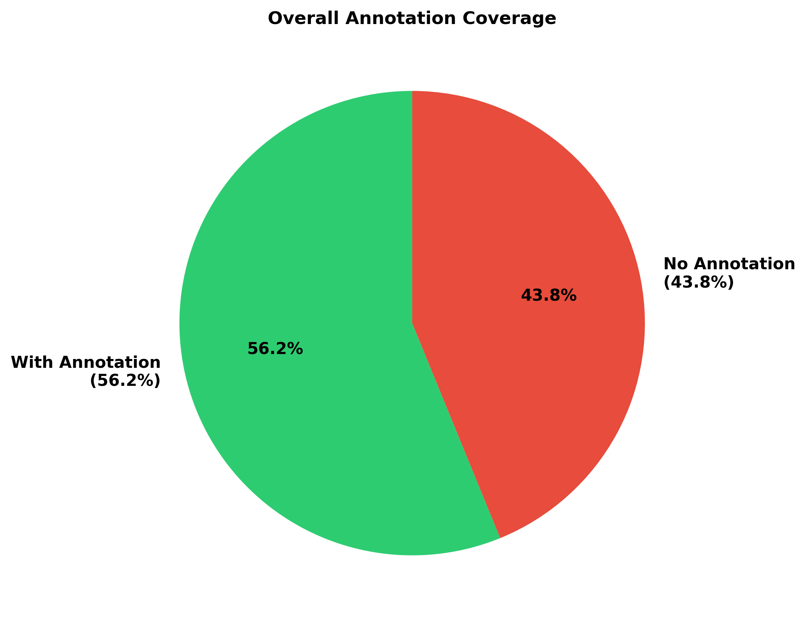
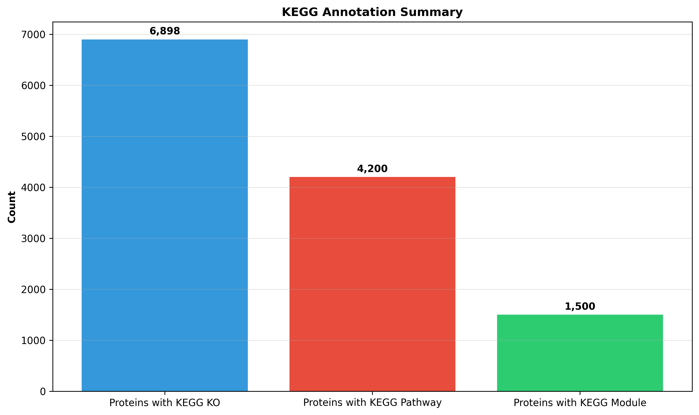
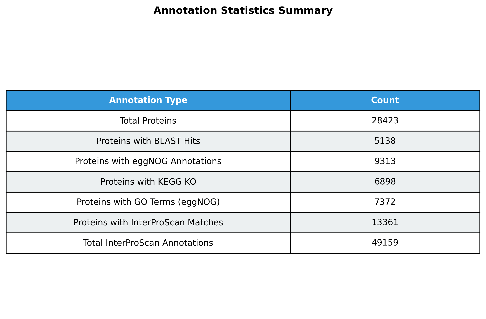

🧬 Transcriptome Annotation Graphics
Comprehensive visualization of EnTAP and InterProScan results
Penaeus monodon (Pacific white shrimp) - February 2026

Annotation Summary Overview
Comprehensive 4-panel overview showing annotation counts by database, overall coverage, KEGG coverage, and top InterProScan databases.

Database Comparison
Horizontal bar chart comparing annotation coverage across all major databases (BLAST, eggNOG, KEGG, GO, InterProScan).

KEGG Pathway Analysis
Analysis of KEGG annotations including KO, Pathway, and Module distribution plus top 10 most frequent pathways.

InterProScan Database Distribution
Coverage breakdown of all InterProScan databases with MobiDBLite and Coils being most abundant.

Gene Ontology (GO) Terms Analysis
4-panel analysis of GO terms from eggNOG and UniProt across biological process, cellular component, and molecular function domains.

eggNOG Annotation Features
eggNOG coverage and feature combinations showing strong correlation with GO term annotation.

Annotation Completeness Distribution
Distribution showing how many annotation types each protein has, with mean and median statistics.

Annotation Co-occurrence Correlation Matrix
Heatmap showing correlation between different annotation types, revealing complementary information sources.

Annotation Co-occurrence & Richness Analysis
4-panel analysis of how annotations co-occur, proteins by annotation count, and annotation richness levels.

Quick Reference: Overall Coverage
Simple pie chart showing 56.2% of proteins have some annotation.

Quick Reference: KEGG Summary
Quick bar chart summary of KEGG annotation coverage.

Quick Reference: Database Statistics Table
Summary table of annotation statistics by database.